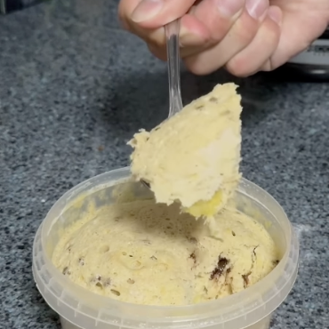

Brownie Proteico
Ingredientes:
- 1 plátano
- 1 huevo
- 1 scoop Proteína
Instrucciones:
- En primer lugar tienes que coger un recipiente y aplastar un plátano con un tenedor
- Cuando ya tengas hecho papilla el plátano echas un huevo.
- El siguiente de los pasos es echar 30 gramos de proteína o cacao en polvo si no tienes proteína.
- El último paso es mezclarlo muy bien para acto seguido meterlo 3/4 minutos en el microondas